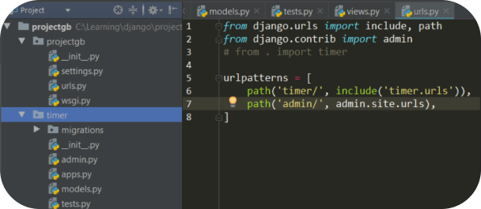
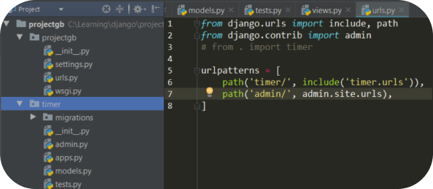

Neuro
forecaster
Нейросиноптик - это сервис, который подскажет погоду. Все расчеты производятся нейросетями. Прогнозы никогда не ошибаются
Читать подробнее


Нейросиноптик - это сервис, который подскажет погоду. Все расчеты производятся нейросетями. Прогнозы никогда не ошибаются
Читать подробнее
Меня зовут Татьяна.
Я преподаватель школы Coddy.
А я еще я репетитор по математике.
Мне нравится современное творчество. Я люблю посещать разнообразные перфоменсы, танцевальные чемпионаты.
Я люблю читать.


 

Нейросиноптик
Программа, которая дает точные прогнозы погоды.
Я написала ее на языке Python используя библиотеку
PyWeather. Общая длина кода измеряется сотнями строк.
На картинках справа можно увидеть пример кода и работы программы.
Именно здесь я научилась делать голосой помощник и создавать сайты.
Мне понравилось создавать сайты. Эти две недели были очень насыщенные.
В будущем мне бы хотелось узнать как создавать не просто сайты-лендинги,
а большие сайты для крупных компаний.
Было весело и познавательно!
Спасибо школа Coddy!